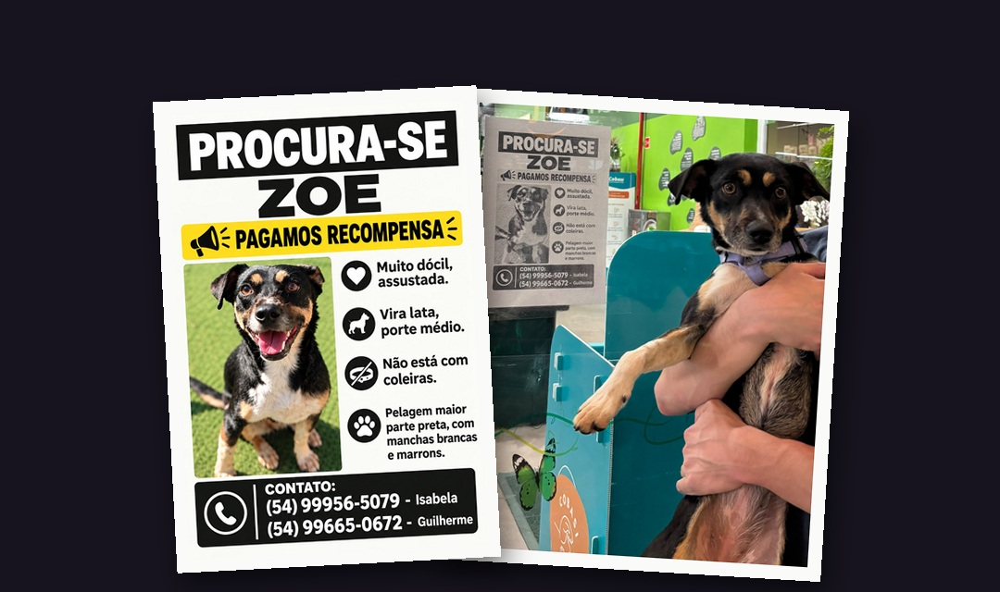

Por 6 dias, uma cidade inteira procurou por mim.
Gente que eu nunca tinha visto compartilhou, ligou, colou cartaz, liberou imagem de câmera.
Por isso, este perfil não é sobre
a cachorra que sumiu.
É sobre
os que ainda estão longe de casa.
e sobre como trazer eles de volta.
O que eu prometo:
Divulgar quem sumiu e quem foi achado em Passo Fundo.
Contar o que a gente aprendeu nos 6 dias.busca, cartazes, câmeras, golpes, prevenção
Dar espaço pra adoção e pra quem cuida.ONGs, lares temporários, protetores
Só compartilhar o que for checado.
e continuar sendo eu, né.
Uma coisa que eu aprendi na rua:
Um animal perdido não volta sozinho.
Ele volta quando alguém olha duas vezes. Quando alguém compartilha. Quando alguém avisa.